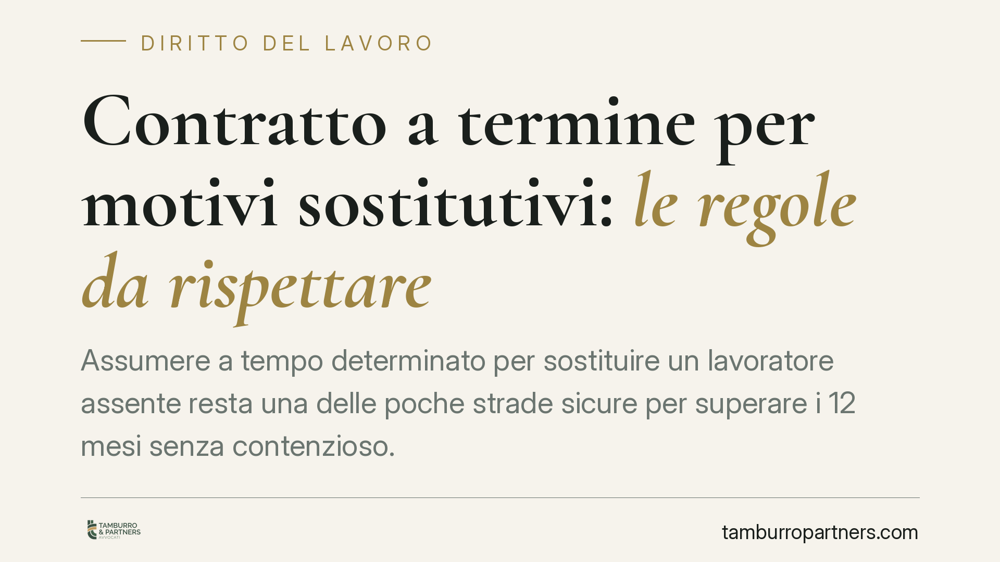

Contratto a termine per motivi sostitutivi: le regole da rispettare
Assumere a tempo determinato per sostituire un lavoratore assente resta una delle poche strade sicure per superare i 12 mesi senza contenzioso. Ma la causale sostitutiva richiede precisione: un'indicazione generica espone al rischio di conversione in contratto a tempo indeterminato. Ecco le regole vigenti su causale, durata e proroghe, dopo le modifiche del D.L. 48/2023.

Inquadramento normativo
Il contratto a tempo determinato è disciplinato dagli artt. 19 e seguenti del D.Lgs. 81/2015. La regola generale: fino a 12 mesi il contratto è libero (acausale); oltre i 12 mesi, e comunque nei rinnovi, occorre una causale che giustifichi l'apposizione del termine.
Il D.L. 48/2023 (conv. L. 85/2023) è intervenuto proprio sull'art. 19, riscrivendo il regime delle causali oltre i 12 mesi. Ha eliminato le rigide causali introdotte dal Decreto Dignità e ha rimesso alla contrattazione collettiva (art. 19, comma 1, lett. a) e a esigenze tecniche, organizzative o produttive individuate dalle parti (lett. b, in via transitoria) la definizione delle giustificazioni. Accanto a queste resta la sostituzione: l'art. 19, comma 1, lett. b-bis) tipizza espressamente le "esigenze di sostituzione di altri lavoratori" come causale autonoma, valida a prescindere dagli accordi collettivi.
È questo il punto pratico rilevante: la sostituzione è una causale sempre disponibile, che non dipende dalle previsioni del CCNL. Per questo, quando serve coprire un'assenza prolungata, resta lo strumento più stabile per andare oltre i 12 mesi.
La causale: cosa scrivere davvero
La causale sostitutiva deve consentire di verificare il nesso tra l'assunzione a termine e l'assenza del lavoratore sostituito. La giurisprudenza chiede tre elementi identificativi:
- Il lavoratore sostituito o, quando non è possibile indicarlo nominativamente (es. sostituzioni a catena o bacini ampi), i criteri oggettivi per individuarlo.
- La ragione dell'assenza: maternità, malattia, aspettativa, ferie prolungate. La causa deve essere reale e attuale.
- La riconducibilità dell'assunto alla funzione lasciata scoperta, anche in modo indiretto (il sostituto può coprire una posizione diversa in una riorganizzazione a scorrimento).
Una clausola generica del tipo "per ragioni sostitutive" non basta: è la prima causa di conversione nei giudizi.
Durata, affiancamento e conservazione del posto
La durata del termine può coincidere con la durata prevedibile dell'assenza. È legittimo prevedere un periodo di affiancamento iniziale (training on the job) prima che l'assente si allontani, e un periodo finale di sovrapposizione al rientro, purché ragionevoli rispetto alla funzione.
Attenzione al diritto del sostituito: se l'assenza dipende da cause che garantiscono la conservazione del posto (maternità, malattia entro il periodo di comporto, congedi), il rientro del titolare fa cessare il termine. Il contratto sostitutivo, di regola, si estingue con il ritorno effettivo del sostituito.
Proroghe e limiti di durata
La durata massima complessiva tra datore e lavoratore, per mansioni di pari livello, è di 24 mesi (art. 19, comma 2). Il contratto può essere prorogato al massimo quattro volte nell'arco dei 24 mesi (art. 21). Superata la soglia delle proroghe o della durata massima, il rapporto si considera a tempo indeterminato.
Sulle conseguenze economiche: in caso di conversione per illegittimità del termine, l'art. 28, comma 2, del D.Lgs. 81/2015 prevede un'indennità onnicomprensiva tra 2,5 e 12 mensilità, che ristora il periodo tra l'interruzione e la sentenza. Trattandosi di formulazione tecnica, ne consigliamo la verifica caso per caso con l'assistenza legale.
Implicazioni pratiche
Per l'azienda: la sostituzione consente di gestire assenze lunghe superando i 12 mesi senza dover ricorrere alle causali collettive. Ma la tenuta del contratto dipende quasi interamente dalla qualità della causale scritta.
Per il lavoratore assunto a termine: una causale vuota o non veritiera è la leva principale per chiedere la conversione a tempo indeterminato.
Cosa fare in concreto
- Scrivete la causale in modo specifico: indicate il sostituito o i criteri oggettivi, la ragione dell'assenza e il collegamento con la funzione da coprire.
- Documentate l'assenza reale del titolare (certificati, provvedimenti di congedo, comunicazioni) e conservate la prova per l'intera durata.
- Fissate un termine coerente con la durata prevedibile dell'assenza; evitate scadenze arbitrarie scollegate dalla causa.
- Tenete il conto di proroghe e mesi: non superate quattro proroghe né i 24 mesi complessivi per mansioni equivalenti.
- Prevedete la cessazione al rientro del sostituito quando l'assenza garantisce la conservazione del posto, disciplinandolo nel contratto.
Disclaimer
Contributo informativo a cura di Tamburro & Partners - Avv. Giuseppe Tamburro. Non costituisce parere legale.
Ogni storia di lavoro ha i suoi tempi.
Se gestisci HR e vuoi un confronto su contenzioso, ispezioni o licenziamenti, scrivi allo studio. Ti rispondiamo entro un giorno lavorativo.